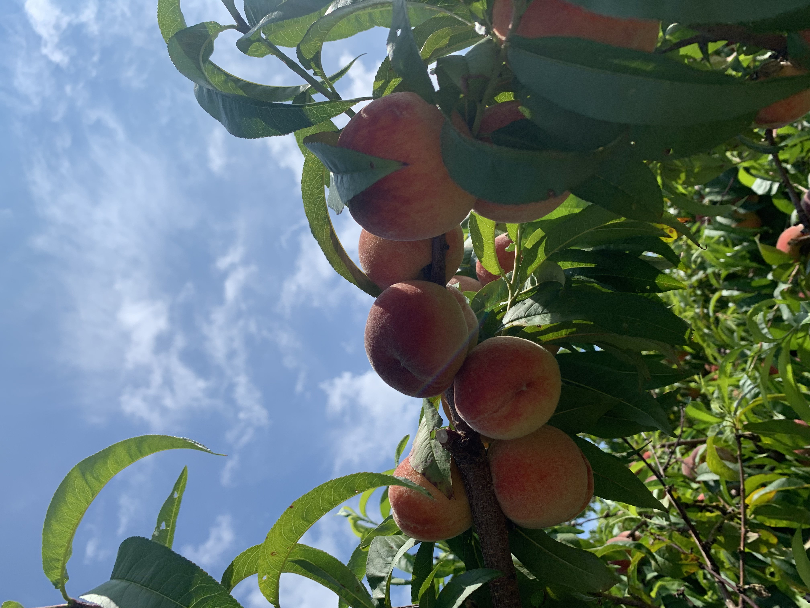
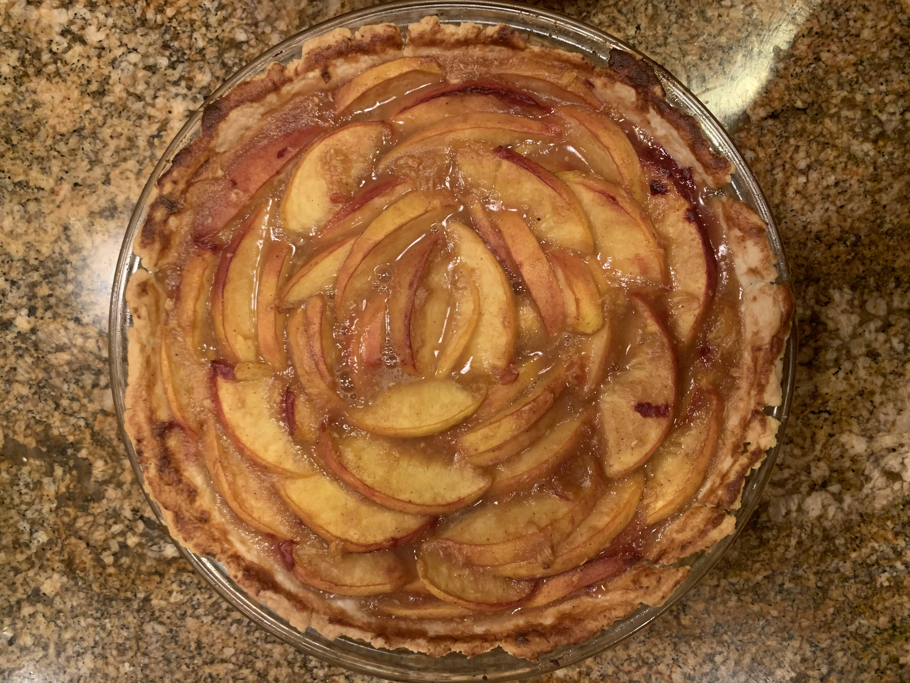
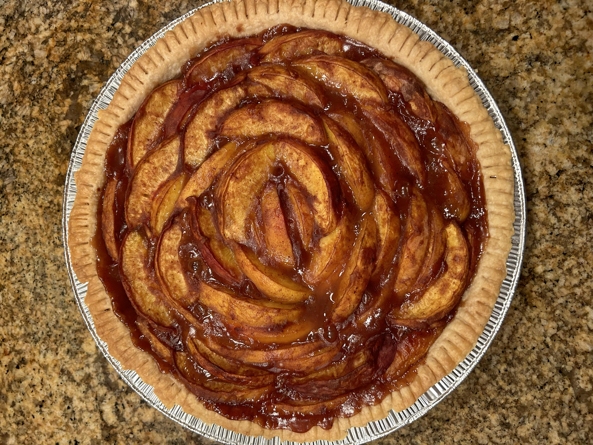
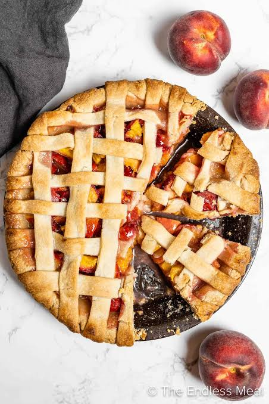

ABOUT
This peach pie recipe holds lots a lot of meaning to me and my family. I've made it so many times, I probably know the recipe my heart! Whether it's for Thanksgiving, the Fourth of July, or a simple family dessert, this pie is perfect for any occasion ... although it's probably better during the peak of summer when peaches are in season!
It started when my sister and I were younger, and now it has become a staple dessert I will bake for the family. We all enjoy in year round. Plus, it's my mom's favorite, so she loves whenever I make this! The recipe has been modified many times, but I think this version is my favorite. It's the perfect balance of sweet and tart, best topped with a scoop of vanilla ice cream. I also use this pie crust recipe for all the pies I bake.
Growing up in the suburbs of Long Island, New York, we would go apple, berry, and peach picking often as a family in the late spring and summer. The more you drive out east, there are a ton of small family farms filled with fresh produce, farmstands, and pick-your-own adventures. One of my favorite memories was going to a peach farm and picking fresh peaching right off the tree and even eating them right there. We brought home so many peaches, we didn't know what to do with them. We definitely had peach pie for days. I'm so glad I get to share this amazing recipe, and I hope you enjoy it as much as I do!
INGREDIENTS
Check off each ingredient as you gather it for this recipe!
PIE CRUST
- 1 and 1/4 cup all purpose flour
- 1/4 tsp salt
- 1/4 tsp salt
- 1/2 cup chilled butter (cut into small cubes)
- 1/4 cup ice water
PEACH FILLING
- 8 small, ripe yellow peaches (about 2 lbs)
- 1/4 cup brown sugar
- 1/4 cup granulated sugar
- 1 tsp cinnamon
- 1 tsp vanilla
- 1/4 tsp salt
- 1 tbsp cornstarch
- 1/8 cup all purpose flour
DIRECTIONS
PIE CRUST
- Add 1 and 1/4 cup of all purpose flour and 1/4 tsp salt to a large mixing bowl.
- Cut in the chilled butter cubes into the flour and salt mixture using a pastry cutter or your hands.
- Mix in ice water as needed until the dough starts to come together
- Knead the mixture until a ball begins to form. Some butter chunks are okay here. Make sure the dough stays cold and not all of the butter has melted.
- Wrap the dough ball in plastic wrap and keep in the refrigerator to chill while prepping other ingredients. For best results, chill for at least an hour.
PEACH FILLING
- Wash and remove pits from all peaches. Cut into thin slices or small cubes.
- In a large bowl, mix together peaches with brown sugar, granulated sugar, cinnamon, vanilla, and salt.
- Stir in cornstarch and flour until the peaches are well coated. Set aside.
ASSEMBLY & BAKING
- Preheat oven to 425°F.
- Cut the dough ball in half. Place one half aside in the fridge to chill.
- Roll out the dough into a large circle enough to cover your pie dish, about 12 inches in diameter.
- Place rolled-out dough into pie dish. Remove any excess dough from the edges.
- Place the peach filling mixture evenly into the pie dish. Pour any excess liquid into the dish as well.
- Roll out the remaining pie dough into a similarly sized circle, about 12 inches in diameter. Cut out 1-inch wide strips to be used to make a lattice top. Place strips in a lattice on top of the pie and seal the edges using a fork.
- Bake at 425°F for 15 minutes then switch the temperature to 375°F and bake for 45 minutes.
- Let cool before eating, and enjoy!
Baking Timer!
DETAILS
| Prep Time | 1 hour |
|---|---|
| Bake Time | 1 hour |
| Total Time | 2 hours |
| Servings | Makes one 9 inch diameter pie, approximately 8 servings |
RECIPE TIPS
- The pie crust dough can also be prepared ahead of time and stored in the refrigerator for up to a week!
- Make sure to keep the pie crust as cold as possible at all times!
- Add an optional egg wash and coarse sugar on top for a shiny crust!
- I often bake my pies without a top crust and they turn out just as good! Use the other half of the pie dough for a second pie!
PHOTOS




Have Comments or Questions?